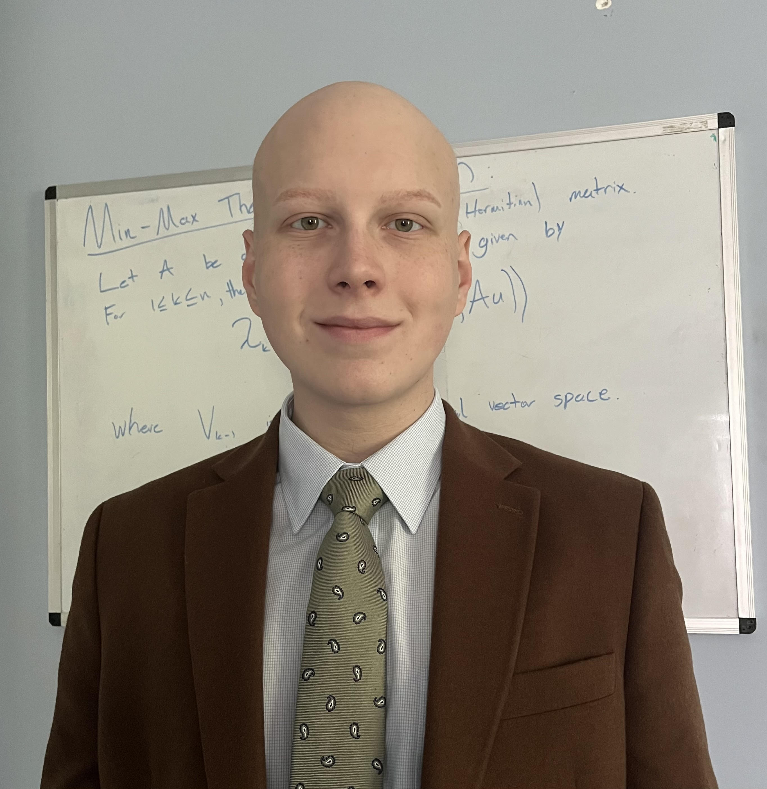

I am graduate student in mathematics currently studying at the Courant Institute at NYU. My interests include real analysis, functional analysis, differential geometry, and the philosphy of mathematics. I have completed a Bachelor of Arts in Mathematics at NYU. I am also interested in analytic philosophy and Orthodox Christian Theology.
